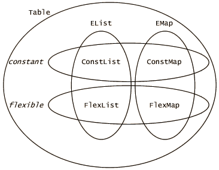

| |
Using Tables |
||||||
The main form of collection in E is the Table. A Table is an explicit collection of a finite number of elements. There are two different ways in which Tables differ from each other:
EList vs. EMap
- An EList is a linear sequence of elements. It corresponds to what other languages call an Array, List, Vector, Sequence, Tuple, or Rope. (A String is an EList of chars.)
- An EMap is a set of key-value pairs, representing a single-valued mapping from keys to values. This means that you can look up a key in an EMap and get the corresponding value, if any. It corresponds to what other languages call a Hashtable, Dictionary, IndexableCollection, Map, or Associative-Array.
Constant vs. Flexible vs. ReadOnly
- A constant table is one-level immutable: As a table, it can never change, but the objects which are members of the table may be mutable. (As in Java, an E String is constant.) Constant tables are also pass-by-copy -- meaning that they are copied when passed between Vats. And they are selfless -- meaning that two constant tables are considered == (the same) based only on their contents. I barely resisted the temptation to call these Stable Tables.
- A flexible table can be modified through the messages provided below.
- A readOnly table is a read-only facet of a flexible table. With a readOnly table, you only have the ability to read the contents of a table that someone else may have the ability to modify. ReadOnly tables do not provide any new messages. Rather, the only messages defined for readOnly tables are the messages shared by constant and flexible tables -- these are the first row of the quick reference matrix below. Since readOnly does not introduce new messages, it will not be treated below as a separate type distinction.
Multiplying the above two type distinctions, we get four concrete types:
- ConstList, an immutable, pass-by-copy sequence of elements. A String is a kind of ConstList.
- FlexList, a changeable, rearrangable sequence of elements, analogous to Java's Vector and StringBuffer.
- ConstMap, an immutable, pass-by-copy hashtable mapping keys to values.
- FlexMap, a changeable mapping of keys to values, analogous to Java's Dictionaries.

Normally, we only talk about EMaps as mapping from keys to values, but ELists can also be seen that way. The elements of an EList are the values, and their position in the EList -- their index -- is the corresponding key. As a result, ELists and EMaps share some messages. The quick reference matrix below shows all the messages you can send to tables, organized by such commonalities. It uses these abbreviations:
- list is any EList
- clist is a ConstList
- rolist is a ReadOnlyList
- flist is a FlexList
- similarly for map, cmap, romap, and fmap
- val is a value element of the table
- index is a key of a list, and therefore an integer in 0..!list size
- key is a key of a map
- f(x,y) is a function of two arguments. In other words, f is an object with a "run" message that takes two arguments
- intReg is an IntegerRegion, normally an interval such as "2..!7".
Table Messages, Quick Reference
|
|||||||
|
EList, ReadOnlyList + list :clist * integer :clist (start, bound) :clist (intReg) :clist asMap() :cmap asKeys() :cmap sort() :clist sort(compFunc) :clist indexOf1(val) :index indexOf1(val, index) :index lastIndexOf1(val) :index lastIndexOf1(val, index) :index includes(list) :boolean startOf(list) :index startOf(list, index) :index lastStartOf(list) :index lastStartOf(list, index) :index __printOn(left, sep, right, oo) |
EMap, ReadOnlyMap or(map, strict) :cmap | map :cmap & map :cmap &! map :cmap maps(key) :bool get(key, instead) :val | instead getKeys() :clist getValues() :clist with(key, val) :cmap without(key) :cmap sortKeys() :cmap sortKeys(compFunc) :cmap sortValues() :cmap sortValues(compFunc) :cmap __printOn(left, map, sep, right, oo) |
||||||
compareTo(clist) :number < clist :boolean <= clist :boolean <=> clist :boolean >= clist :boolean > clist :boolean compareTo(clist, compFunc) :number |
compareTo(cmap) :number < cmap :boolean <= cmap :boolean <=> cmap :boolean >= cmap :boolean > cmap :boolean |
||||||
[index] := val :val (start, bound) := list :list (intReg) := list :list removeRun(start, bound) :clist removeRun(intReg) :clist push(val) append(list) pop() :val setSize(integer) ensureSize(integer) |
[key] := val :val put(key, val, strict) putAll(map) putAll(map, strict) removeKey(key) :val removeKey(key, strict) :val removeKeys(map) removeKeys(map, strict) removeAll() |
||||||
The messages shared by ConstList, FlexList, and ReadOnlyList are documented in ConstList, since ConstLists are used more often. Similarly, the messages shared by ConstMap, FlexMap, and ReadOnlyMap are documented in ConstMap.
These types have the following subtypes:
| EList | EMap Scope |
|
|---|---|---|
| constant | ConstMap ConstScope |
|
| flexible | FlexList |
FlexMap FlexScope |
- String is a special kind of ConstList containing only characters.
- Scopes are used within the E language as mappings from variable names (Strings) to variables and their values. Even when E is implemented by more efficient means (as is recommended), E appears to implement variable definition and lookup by interaction with Scope objects, thus enabling implementation-independent tools for manipulating computation, like debuggers.
Follow the links in the above matrices for a detailed explanation of each type and message, or keep reading this chapter for an introduction to these types adequate to get you started programming with tables.
Introduction to ELists
Here's the color spectrum according to a silly mnemonic many of us learned in grade school, represented as an ConstList:
We can look up the value at a particular index using the familiar indexing notation:? pragma.syntax("0.8") ? def spectrum := ["red", "orange", "yellow", "green", > "blue", "indigo", "violet"] # value: ["red", "orange", "yellow", "green", "blue", "indigo", "violet"]
? spectrum[2] # value: "yellow"
We can extract sub-lists, or runs, by using parens and providing a start position and a stop position:
? spectrum(1, 3) # value: ["orange", "yellow"]
This extracts the run from the start position, including the start position, up to but not including the stop position. The stop position is the first position after the run.
We can loop through the spectrum using the for loop:
? var mnemonic := ""
# value: ""
? for color in spectrum {
> mnemonic += `${color[0]}`
> }
? mnemonic
# value: "roygbiv"
What about the "+=" to accumulate the mnemonic? ELists can be concatenated with "+". Here's the spectrum rotated:
? spectrum(3, spectrum.size()) + spectrum(0, 3) # value: ["green", "blue", "indigo", "violet", "red", "orange", "yellow"]
spectrum(0, 3) requests the run from 0 inclusive to 3 exclusive. spectrum(3, spectrum size) requests the run from 3 inclusive to the end.
The values in an EList can be any object, including itself:
? def infinitree := ["left", infinitree, "rt"] # value: ["left", <***CYCLE***>, "rt"] ? infinitree[1][1][1][0] # value: "left"
Although this is implemented as a cyclic data structure, it represents an infinite repeating data structure:
["left", ["left", ["left", ["left", ..., "rt"], "rt"], "rt"], "rt"]
so we can explain the above look-up expression as finding the "left" shown in bold.
Making Changes
What if we want a spectrum list we can change? We need a modifiable list (a FlexList) whose initial state is a copy of spectrum's. When we modify this list, its state will diverge from spectrum's, so that's how we ask for it:
? def flextrum := spectrum.diverge() # value: ["red", "orange", "yellow", "green", \ # "blue", "indigo", "violet"].diverge()
We can then assign to individual elements
? flextrum[1] := "burnt-orange" # value: "burnt-orange" ? flextrum # value: ["red", "burnt-orange", "yellow", "green", \ # "blue", "indigo", "violet"].diverge()
or to runs
? flextrum(3,6) := ["cyan", "sky-blue"] # value: ["cyan", "sky-blue"] ? flextrum # value: ["red", "burnt-orange", "yellow", "cyan", \ # "sky-blue", "violet"].diverge()
Notice that the size of the run replaced can differ from the size of the run replacing it. The rest of the list slides over to accommodate. A read-only facet of a list allows one to observe the current state of the list, but not to change it.
? def rainbow := flextrum.readOnly() # value: ["red", "burnt-orange", "yellow", "cyan", \ # "sky-blue", "violet"].diverge().readOnly() ? rainbow[2] := "light yellow" # problem: <NoSuchMethodException: <a ROList>.put/2>
To preserve a copy of the current state of the flextrum, safe from future changes, we can a ask for new FlexList that diverges from this one, or we can take a snapshot.
? def colors := flextrum.snapshot() # value: ["red", "burnt-orange", "yellow", "cyan", "sky-blue", "violet"] ? flextrum(1,1) := ["mauve"] # value: ["mauve"] ? flextrum # value: ["red", "mauve", "burnt-orange", "yellow", "cyan", \ # "sky-blue", "violet"].diverge() ? colors # value: ["red", "burnt-orange", "yellow", "cyan", "sky-blue", "violet"] ? rainbow # value: ["red", "mauve", "burnt-orange", "yellow", "cyan", \ # "sky-blue", "violet"].diverge().readOnly()
As its name implies, snapshot returns an immutable record of the current state, ie, a ConstList. On the other hand, with rainbow you can watch the colors change.
Introduction to EMaps
When we defined spectrum, we wrote the values of the EList in order. The correspondence between the key 2 and the value "yellow" was implicit in this order. An EMap, by contrast, maps from arbitrary keys to arbitrary values, so this mapping is written out explicitly using the maps to operator, "=>". For example, a simple way to represent a family tree is as a mapping from a person's name (as the key) to the pair of his mom and dad (as the value):
? def parentMapM := ["MarkM" => ["Ann", "Bernie"], > "Jeff" => ["Ann", "Bernie"], > "Ann" => ["Grina", "Isaac"], > "Max" => ["Lisa", "Jeff"]] # value: ["MarkM" => ["Ann", "Bernie"], \ # "Jeff" => ["Ann", "Bernie"], \ # "Ann" => ["Grina", "Isaac"], \ # "Max" => ["Lisa", "Jeff"]]
Notice that a two-element EList is a natural way to write a pair.
Of course, we can look up someone's parents
? parentMapM["Max"] # value: ["Lisa", "Jeff"]
finding that Max's mom is Lisa and Max's dad is Jeff. Or we can test whether a name is listed (whether the name as a key maps to anything):
? parentMapM.maps("Max")
# value: true
? parentMapM.maps("Fred")
# value: false
EMaps support the normal operations you would expect from its counterparts in other languages. In addition, just as ELists can be concatenated using "+", EMaps can be combined using "|" (union), "&" (intersection), and "-" (minus).
For example, let's say parentMapT represents another family, and we wish to combine the families? def parentMapT := ["Terry" => ["Betty", "Bill"], > "Cindy" => ["Betty", "Bill"], > "Everett" => ["Betty", "Bill"], > "Angie" => ["Cindy", "Louis"], > "Mandy" => ["Cindy", "Louis"]] # value: ["Terry" => ["Betty", "Bill"], \ # "Cindy" => ["Betty", "Bill"], \ # "Everett" => ["Betty", "Bill"], \ # "Angie" => ["Cindy", "Louis"], \ # "Mandy" => ["Cindy", "Louis"]]
? def parentMapMT := parentMapT | parentMapM # value: ["MarkM" => ["Ann", "Bernie"], \ # "Jeff" => ["Ann", "Bernie"], \ # "Ann" => ["Grina", "Isaac"], \ # "Max" => ["Lisa", "Jeff"], \ # "Terry" => ["Betty", "Bill"], \ # "Cindy" => ["Betty", "Bill"], \ # "Everett" => ["Betty", "Bill"], \ # "Angie" => ["Cindy", "Louis"], \ # "Mandy" => ["Cindy", "Louis"]] ? (parentMapM & parentMapT).size() # value: 0
The "|" operator brings about a union of the families -- you don't even need a caterer. However, if both families have someone of the same name, then (as always in E) the left side wins. To insure that we don't have any conflicts, we also take the intersection of the families using "&". This intersection contains only the subset of the left-hand family whose names are the same as members of the right-hand family. Fortunately for our example, we see the intersection is empty, so we have no conflicts.
We can also iterate over an EMap using the for loop. If we use the simple form, we'll just iterate over the values of the EMap -- often useful, but not very interesting for this example. The more explicit form of the for loop gives us each key-value pair in turn:
? def printFamily(parentMap) :void {
> for child => [mom, dad] in parentMap {
> println(`$mom and $dad had $child`)
> }
> }
# value: <printFamily>
? printFamily(parentMapMT)
# stdout: Ann and Bernie had MarkM
# Ann and Bernie had Jeff
# Grina and Isaac had Ann
# Lisa and Jeff had Max
# Betty and Bill had Terry
# Betty and Bill had Cindy
# Betty and Bill had Everett
# Cindy and Louis had Angie
# Cindy and Louis had Mandy
#
Using EMaps as Sets
Note: Since this page was written, we have added an ESet / ConstSet / FlexSet triple to parallel the EList and EMap triples. Although the following technique still works, when you want a set, we recommend you use a variety of ESet instead.
Often you want to simply represent a set of elements. The elements of the set are not naturally indexed by any particular keys, so making them the values of an EMap seems wrong. Likewise, they have no natural order, so putting them in an EList seems wrong. We may want to quickly figure out if an object is a member of the set, and either of these choices would cause a linear search. Instead, E's convention is to make them keys of an EMap, and to have all the values be null.
? def CapLanguages := ["E" => null, > "Joule" => null, > "Trusty Scheme" => null] # value: ["E" => null, "Joule" => null, "Trusty Scheme" => null]
This correctly defines the set of capability languages, but is awkward to write. This convenience
? def CapLanguages := ["E", "Joule", "Trusty Scheme"].asKeys() # value: ["E" => null, "Joule" => null, "Trusty Scheme" => null]
which asks for a map in which the list elements are the keys, is equivalent.
Since maps-as-sets have no values to speak of, "|", "&", and "-" on such maps are exactly set-union, set-intersection, and set-minus. Here we look at the relationship between sets of Capability systems and the set of Open-Source systems.
? def CapOSs := ["Hydra", "KeyKOS", "EROS"].asKeys() # value: ["Hydra" => null, "KeyKOS" => null, "EROS" => null] ? def OpenSource := ["Linux", "Netscape", > "Apache", "E", "EROS"].asKeys() # value: ["Linux" => null, "Netscape" => null, \ # "Apache" => null, "E" => null, "EROS" => null] ? def CapSystems := CapLanguages | CapOSs # value: ["Hydra" => null, "KeyKOS" => null, "EROS" => null, \ # "E" => null, "Joule" => null, "Trusty Scheme" => null] ? def OpenCaps := CapSystems & OpenSource # value: ["E" => null, "EROS" => null]
Since we know we're only interested in the keys, by asking for a list of the keys:
? OpenCaps.getKeys() # value: ["E", "EROS"]
we see the list of all open-source capability systems known to this author. But beware, the EMap is not the terrain.
? def ClosedCaps := CapSystems &! OpenSource # value: ["Hydra" => null, "KeyKOS" => null, \ # "Joule" => null, "Trusty Scheme" => null]
The "&!" is pronounced "but not" and expands to the "butNot(..)" message. "x &! y" contains those associations whose keys are in x but not in y. It should always be equivalent to "x & !y", except that collections that cannot support "!" (because it would yield an infinite collection) may still support "&!". In particular, EMaps do not support "!".
Changing EMaps
EMaps respond to diverge(), snapshot(), and readOnly() in exactly the same way ELists do.
Unless stated otherwise, all text on this page which is either unattributed or by Mark S. Miller is hereby placed in the public domain.
| |
|
report bug (including invalid html)
|
||||||||